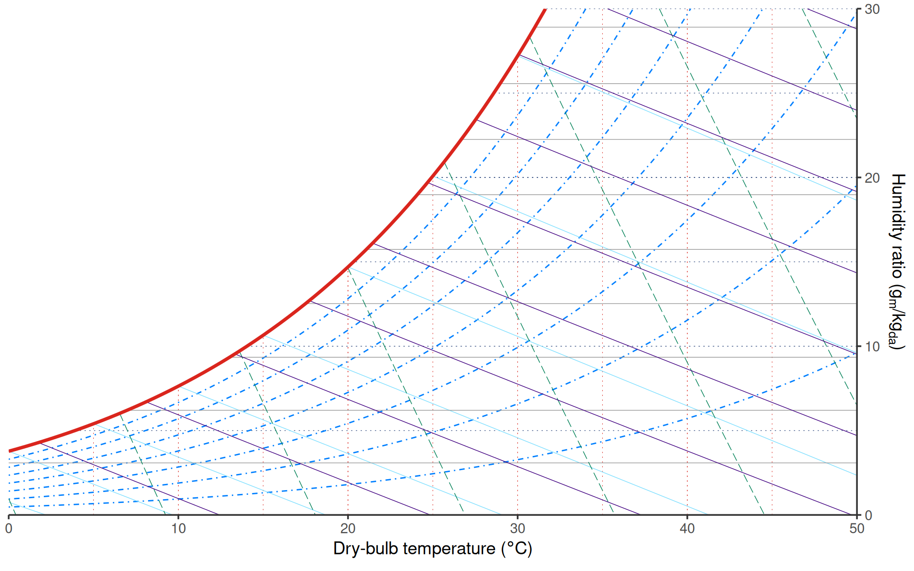
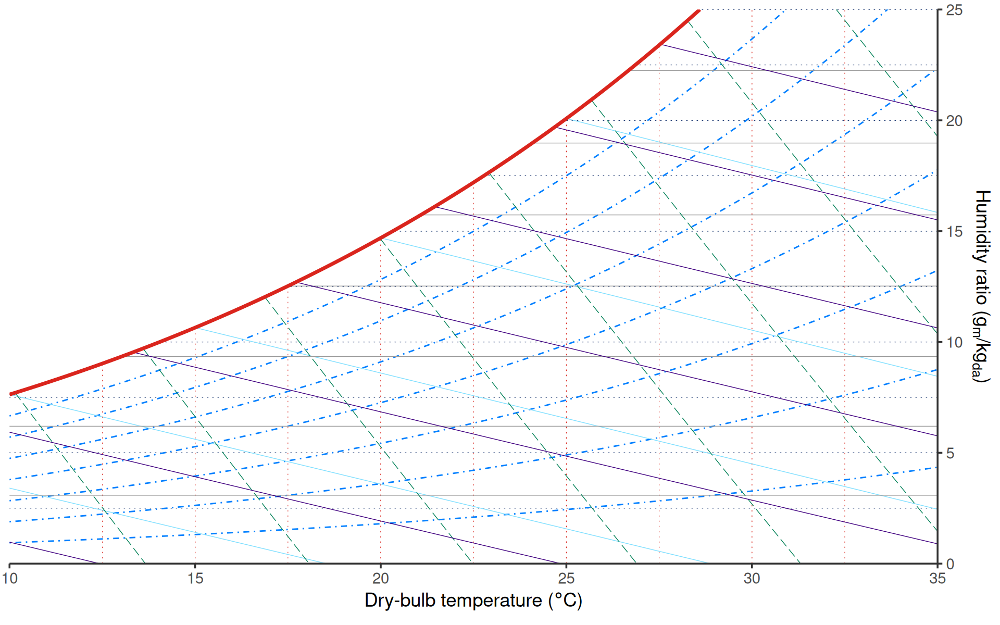
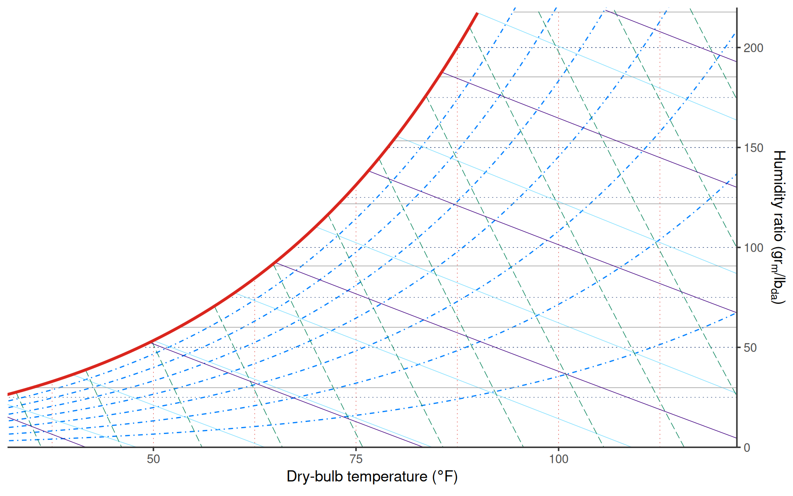
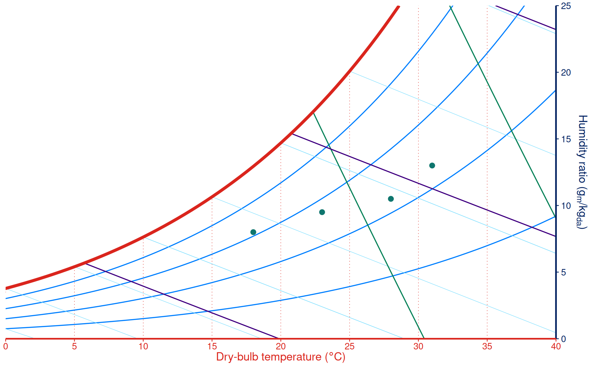

ggpsychro creates psychrometric charts with the same additive grammar
used by ggplot2. Start with ggpsychro(), choose the chart
limits and units, and then add grids, scales, stats, geoms, and themes
with +.

Chart limits and units
tdb_lim controls the dry-bulb temperature range.
hum_lim controls the displayed humidity ratio range. SI
units are used by default.

Use units = "IP" for IP charts. The dry-bulb limits are
in degree F and the humidity-ratio limits are in grains per pound of dry
air.

Explicit coordinates
ggpsychro() sets up the psychrometric coordinate system
for you. If you are building up a plot in smaller pieces,
coord_psychro() can also be added explicitly.
ggpsychro() +
coord_psychro(tdb_lim = c(10, 35), hum_lim = c(0, 25), units = "SI")
Add ggplot layers
Because the result is a ggplot object, regular ggplot layers work as usual.
states <- data.frame(
dry_bulb_temperature = c(18, 23, 28, 31),
humidity_ratio = c(8, 9.5, 10.5, 13)
)
ggpsychro(states, aes(dry_bulb_temperature, humidity_ratio),
tdb_lim = c(0, 40), hum_lim = c(0, 25)
) +
psychro_preset("minimal") +
geom_point(color = "#0f766e", size = 2)
For data recorded as relative humidity, wet-bulb temperature, vapor pressure, specific volume, or enthalpy, see Plotting psychrometric data.